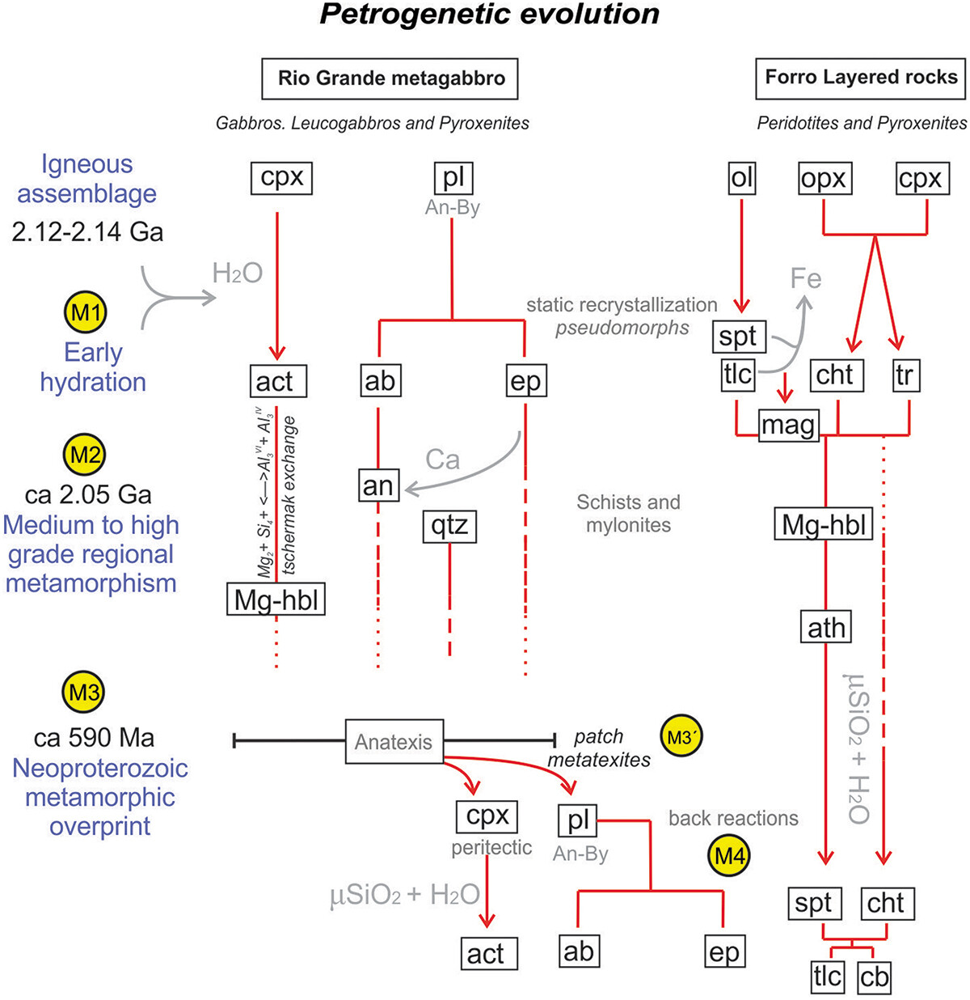

Geochemistry, U-Pb and Sm-Nd isotopic constraints on Rhyacian metamafic-metaultramafic plutonic rocks in the southern São Francisco paleocontinent, Mineiro belt, Brazil: petrogenesis and tectonic implication

Resumo em Português
Rochas máficas e ultramáficas são fundamentais para a compreensão da evolução da Terra, fornecendo informações sobre a formação crustal antiga, os processos orogênicos e a amalgamação de continentes. Este estudo examina a petrogênese e a história metamórfica do Cinturão Mineiro, um importante sistema acrecionário Paleoproterozoico no Paleocontinente São Francisco-Congo meridional (Brasil). Por meio de análises petrográficas, geoquímica de rocha total e de minerais, e dados isotópicos U-Pb e Sm-Nd, investigamos o metagabro Rio Grande, os metapiroxenitos e metaperidotitos Forro. Os resultados revelam magmatismo toleítico Riaciano, com idades de cristalização U-Pb em zircão de 2111 ± 10 Ma e 2113 ± 14 Ma para o metagabro Rio Grande e de 2116 ± 39 Ma para o metapiroxenito Forro. Essas idades se correlacionam com o quinto episódio de magmatismo máfico-ultramáfico Paleoproterozoico (2,18–2,10 Ga) registrado no Paleocontinente São Francisco-Congo e com a formação do supercontinente Columbia. As assinaturas isotópicas indicam uma fonte mantélica depletada com contaminação crustal subordinada (εNd(t) = -0,46 a +4,10) e influência de fonte Neoarqueana (idades TDM de 2,72–2,78 Ga). A evolução metamórfica inclui uma hidratação inicial em fácies xisto-verde, seguida de metamorfismo em fácies anfibolito e uma sobreposição tardia de baixo grau. Adicionalmente, foi identificado um evento anatético Neoproterozoico (~590 Ma) que afetou o metagabro Rio Grande, delimitando um período de retrabalhamento crustal associado à amalgamação do Gondwana Ocidental e ao processo de descratonização ao longo das margens meridionais do Cráton São Francisco.